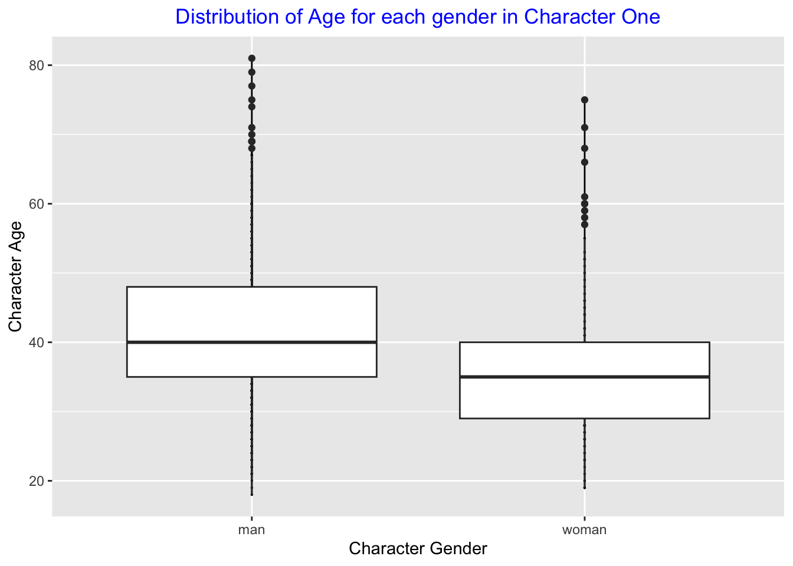
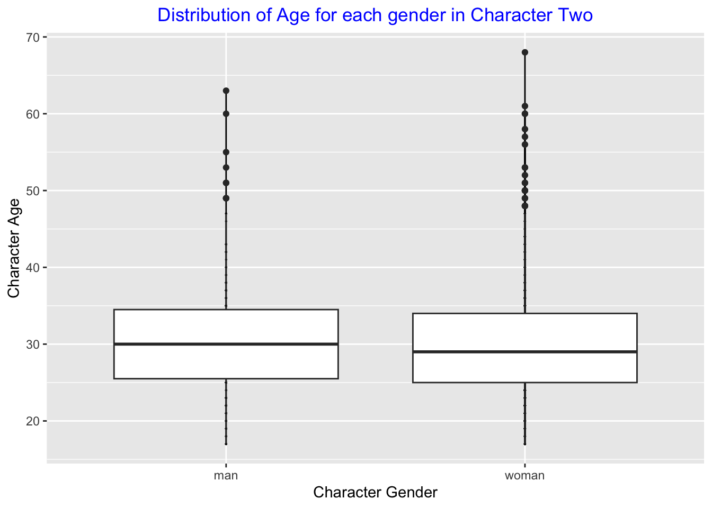
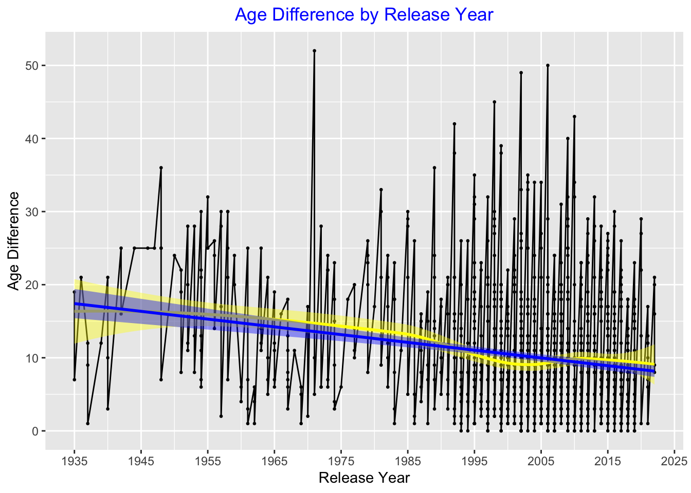
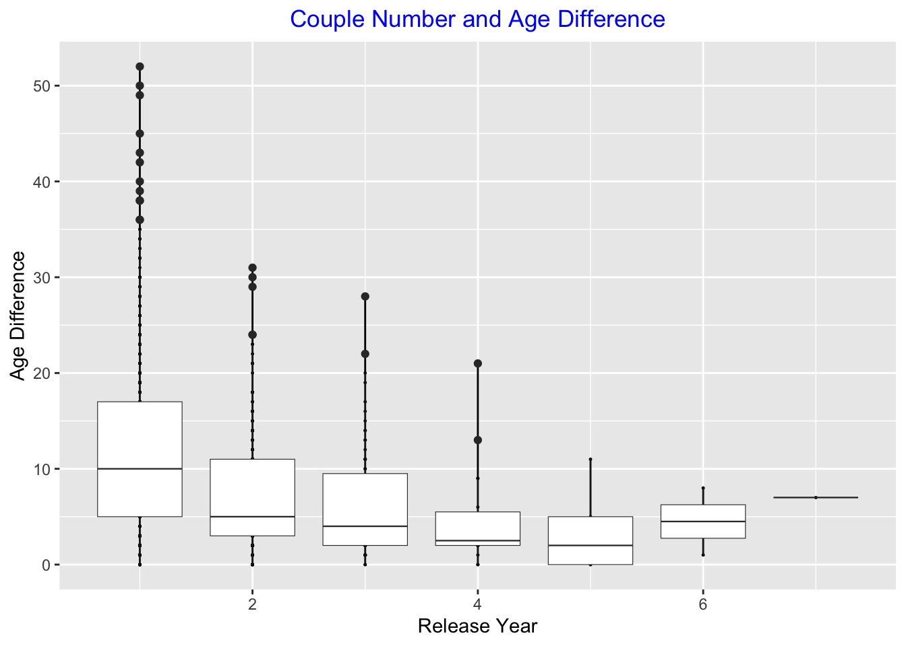

library("dplyr")
library("ggplot2")
library("stringr")
library("tidyverse")Tidy Tuesday Exercise
Load the required libraries
Importing dataset from github tidytuesday repository
dat <- read.csv("https://raw.githubusercontent.com/rfordatascience/tidytuesday/master/data/2023/2023-02-14/age_gaps.csv")Glimpse, structure, and summary of the dataset
glimpse(dat)Rows: 1,155
Columns: 13
$ movie_name <chr> "Harold and Maude", "Venus", "The Quiet American", …
$ release_year <int> 1971, 2006, 2002, 1998, 2010, 1992, 2009, 1999, 199…
$ director <chr> "Hal Ashby", "Roger Michell", "Phillip Noyce", "Joe…
$ age_difference <int> 52, 50, 49, 45, 43, 42, 40, 39, 38, 38, 36, 36, 35,…
$ couple_number <int> 1, 1, 1, 1, 1, 1, 1, 1, 1, 1, 1, 1, 1, 1, 1, 1, 1, …
$ actor_1_name <chr> "Ruth Gordon", "Peter O'Toole", "Michael Caine", "D…
$ actor_2_name <chr> "Bud Cort", "Jodie Whittaker", "Do Thi Hai Yen", "T…
$ character_1_gender <chr> "woman", "man", "man", "man", "man", "man", "man", …
$ character_2_gender <chr> "man", "woman", "woman", "woman", "man", "woman", "…
$ actor_1_birthdate <chr> "1896-10-30", "1932-08-02", "1933-03-14", "1930-09-…
$ actor_2_birthdate <chr> "1948-03-29", "1982-06-03", "1982-10-01", "1975-11-…
$ actor_1_age <int> 75, 74, 69, 68, 81, 59, 62, 69, 57, 77, 59, 56, 65,…
$ actor_2_age <int> 23, 24, 20, 23, 38, 17, 22, 30, 19, 39, 23, 20, 30,…str(dat)'data.frame': 1155 obs. of 13 variables:
$ movie_name : chr "Harold and Maude" "Venus" "The Quiet American" "The Big Lebowski" ...
$ release_year : int 1971 2006 2002 1998 2010 1992 2009 1999 1992 1999 ...
$ director : chr "Hal Ashby" "Roger Michell" "Phillip Noyce" "Joel Coen" ...
$ age_difference : int 52 50 49 45 43 42 40 39 38 38 ...
$ couple_number : int 1 1 1 1 1 1 1 1 1 1 ...
$ actor_1_name : chr "Ruth Gordon" "Peter O'Toole" "Michael Caine" "David Huddleston" ...
$ actor_2_name : chr "Bud Cort" "Jodie Whittaker" "Do Thi Hai Yen" "Tara Reid" ...
$ character_1_gender: chr "woman" "man" "man" "man" ...
$ character_2_gender: chr "man" "woman" "woman" "woman" ...
$ actor_1_birthdate : chr "1896-10-30" "1932-08-02" "1933-03-14" "1930-09-17" ...
$ actor_2_birthdate : chr "1948-03-29" "1982-06-03" "1982-10-01" "1975-11-08" ...
$ actor_1_age : int 75 74 69 68 81 59 62 69 57 77 ...
$ actor_2_age : int 23 24 20 23 38 17 22 30 19 39 ...summary(dat) movie_name release_year director age_difference
Length:1155 Min. :1935 Length:1155 Min. : 0.00
Class :character 1st Qu.:1997 Class :character 1st Qu.: 4.00
Mode :character Median :2004 Mode :character Median : 8.00
Mean :2001 Mean :10.42
3rd Qu.:2012 3rd Qu.:15.00
Max. :2022 Max. :52.00
couple_number actor_1_name actor_2_name character_1_gender
Min. :1.000 Length:1155 Length:1155 Length:1155
1st Qu.:1.000 Class :character Class :character Class :character
Median :1.000 Mode :character Mode :character Mode :character
Mean :1.398
3rd Qu.:2.000
Max. :7.000
character_2_gender actor_1_birthdate actor_2_birthdate actor_1_age
Length:1155 Length:1155 Length:1155 Min. :18.00
Class :character Class :character Class :character 1st Qu.:33.00
Mode :character Mode :character Mode :character Median :39.00
Mean :40.64
3rd Qu.:47.00
Max. :81.00
actor_2_age
Min. :17.00
1st Qu.:25.00
Median :29.00
Mean :30.21
3rd Qu.:34.00
Max. :68.00 Variables in the dataset
names(dat) [1] "movie_name" "release_year" "director"
[4] "age_difference" "couple_number" "actor_1_name"
[7] "actor_2_name" "character_1_gender" "character_2_gender"
[10] "actor_1_birthdate" "actor_2_birthdate" "actor_1_age"
[13] "actor_2_age" table(dat$character_1_gender)
man woman
941 214 table(dat$character_2_gender)
man woman
215 940 Let’s check the distribution of men and women in these movies
For Character 1
p1 <- ggplot(dat, aes(x = character_1_gender, y = actor_1_age)) +
geom_point(size = 0.1) +
geom_line() +
geom_boxplot() +
labs(x = "Character Gender", y = "Character Age")
p1 + ggtitle("Distribution of Age for each gender in Character One") +
theme(plot.title = element_text(hjust = 0.5, color = "blue")) 
From this plot, the average age for men in character 1 is around 40. This average for women is around 35. Thus, men are older compared to women for character 1.
For Character 2
p2 <- ggplot(dat, aes(x = character_2_gender, y = actor_2_age)) +
geom_point(size = 0.1) +
geom_line() +
geom_boxplot() +
labs(x = "Character Gender", y = "Character Age")
p2 + ggtitle("Distribution of Age for each gender in Character Two") +
theme(plot.title = element_text(hjust = 0.5, color = "blue")) 
From this plot of character 2, the average age for men is around 30, and the average for women is around 28.
Visualizing whether the age difference increase or decrease over time
p3 <- ggplot(dat, aes(x = release_year, y = age_difference)) +
geom_point(size = 0.5) +
geom_line() +
geom_smooth(method = "loess", color = "yellow", fill = "yellow") +
geom_smooth(method = lm, color = "blue", fill = "blue") +
scale_x_continuous(breaks=c(1935, 1945, 1955, 1965, 1975, 1985, 1995, 2005, 2015, 2025)) +
labs(x = "Release Year", y = "Age Difference")
p3 + ggtitle("Age Difference by Release Year") +
theme(plot.title = element_text(hjust = 0.5, color = "blue")) `geom_smooth()` using formula = 'y ~ x'
`geom_smooth()` using formula = 'y ~ x'
According to this graph, it does appear that the age difference gradually decrease over time. However, it does appear that around 2005, there was some increase. The curve slightly went from down to up.
We would like to see how the impact of couple number on age difference
p4 <- ggplot(dat, aes(x = couple_number, y = age_difference, group = couple_number)) +
geom_point(size = 0.2) +
geom_line() +
geom_boxplot(size = 0.2) +
labs(x = "Release Year", y = "Age Difference")
p4 + ggtitle("Couple Number and Age Difference") +
theme(plot.title = element_text(hjust = 0.5, color = "blue")) 
From this graph, it seems that there greater age difference there is, the lower number of couple.